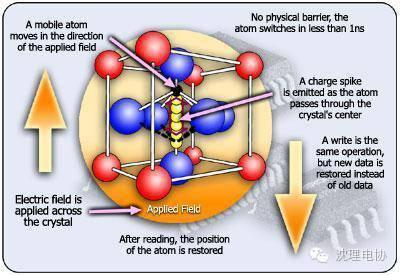
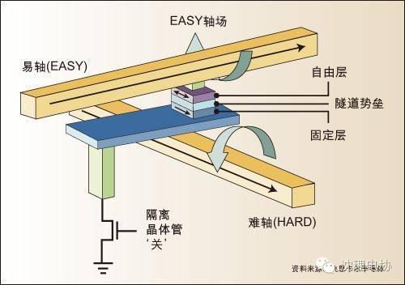
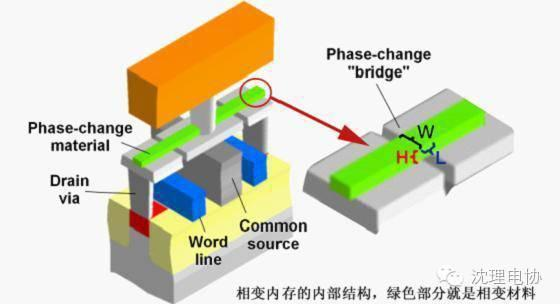
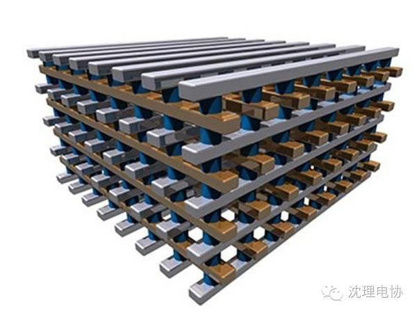
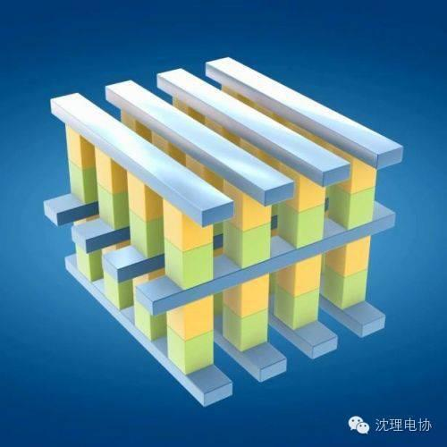

闪存（Flash）的继承者们
闪存（Flash）是目前主流的存储器件，不但全面占领各种便携计算设备，也开始进入数据中心。但是，厂商们依然不满足，他们觉得闪存还是不够完美，比如，延迟水平更高(特别是写入操作)，写入周期有限，无法寻址直接运行程序等等等等。
FRAM（ferromagnetic random access memory）铁电存储器

FRAM使用铁电晶体材料—通常是氧化物—可以不需外界电场就能永久地改变电偶极矩(衡量极性分子极性角度的一个指标)。因此，它们是非易失性的。大量铁电材料同时形成纳米级的偶极子，在实验室中可以利用电场在直径只有几个纳米的区域中进行转换，这些区域被称为量子点。Celis半导体、Hynix、Macronix、英飞凌、Ramtron、三星电子、三洋、德州仪器和东芝一直在对FRAM加以研究。

MRAM是一种非易失性磁性随机存储器。它拥有静态随机存储器(SRAM)的高速读取写入能力及动态随机存储器(DRAM)的高集成度，基本上可以无限次重复写入。其设计原理非常诱人，它通过控制铁磁体中的电子旋转方向来达到改变读取电流大小的目的，从而使其具备二进制数据存储能力。MRAM的主要缺点是固有的写操作过高和技术节点缩小受限。为了克服这两大制约因素，业界提出了自旋转移矩RAM(SPRAM)解决方案，这项创新技术是利用自旋转换矩引起的电流感应式开关效应。尽管这一创新方法在一定程度上解决了MRAM的一些常见问题，但还有很多挑战等待研究人员克服，如自读扰动、写次数、单元集成等。

PRAM是最好的闪存替代技术之一，能够涵盖不同非易失性存储器应用领域，满足高性能和高密度两种应用要求。它利用温度变化引起硫系合金(Ge2Sb2Te5)相态逆变的特性，利用电流引起的焦耳热效应对单元进行写操作，通过检测非晶相态和多晶相态之间的电阻变化读取存储单元。虽然这项技术最早可追溯到上个世纪70年代，但是直到最近人们才重新尝试将其用于非易失性存储器，采用相变合金的光电存储设备取得了商业成功，也促进了人们发现性能更优异的相变材料结构的研究活动，相变存储器证明其具有达到制造成熟度的能力。从应用角度看，PRAM可用于所有存储器，特别适用于消费电子、计算机、通信三合一电子设备的存储器系统。常用相变材料晶态电阻率和结晶温度低、热稳定性差，需要通过掺杂来改善性能。

ReRAM阻变随机存储器是一种基于阻值变化来记录存储数据信息的非易失性存储器（NVM）器件。它是以非导性材料的电阻在外加电场作用下，在高阻态和低阻态之间实现可逆转换为基础的非易失性存储器。作为阻变式存储器芯片一个重要的电子元件，忆阻器（memristor）的电阻会随外加电压的高低而改变。相比其它非易失性存储技术，RRAM是高速存储器。

这项由Intel和美光联合开发的技术，一出生就变成了网红。英特尔与美光双方明确表示，3D XPoint的定位并不属于NAND或者DRAM技术的替代性方案。而且在此基础上，两家公司更多是在强调3D XPoint的具体应用范畴，其更接近于NAND而非DRAM。它应该成为一种补充性技术，旨在解决DRAM与NAND之间延迟水平与成本差异所带来的两难抉择。基本上，3D XPoint是计算机架构当中的一种新型层级，因为它既能够作为速度较慢的非易失性内存、亦可以作为速度更快的存储机制。

信息部/吴心成